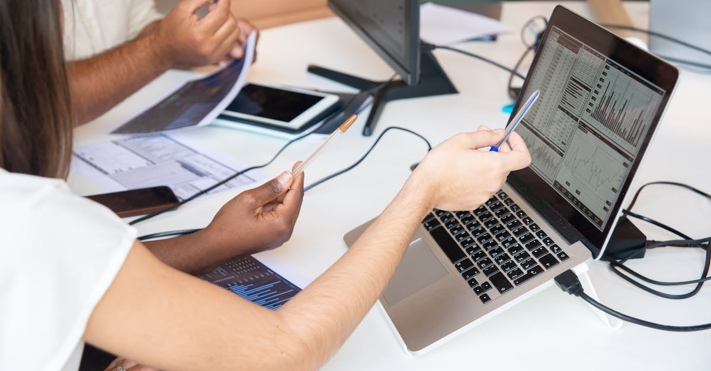
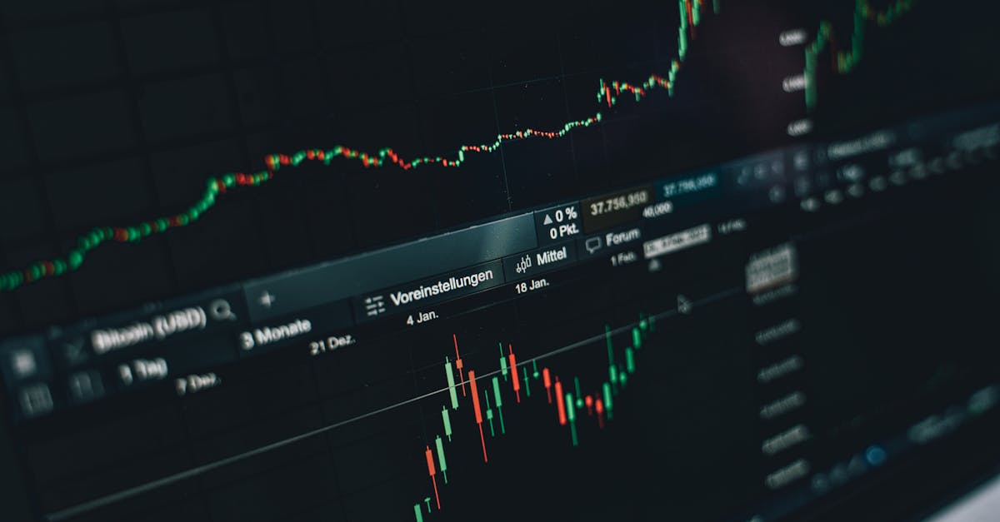
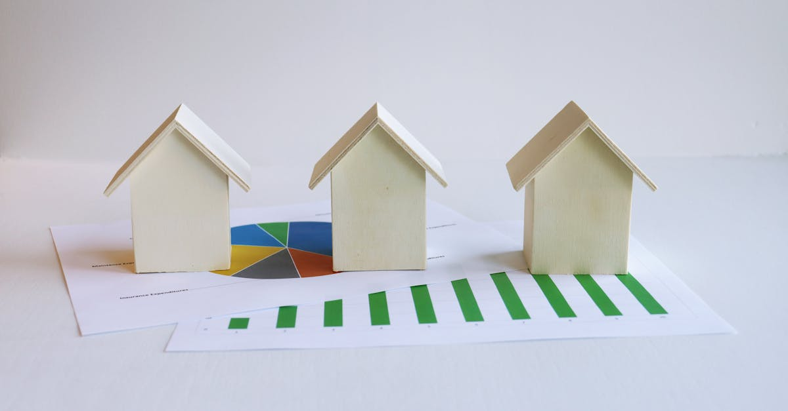
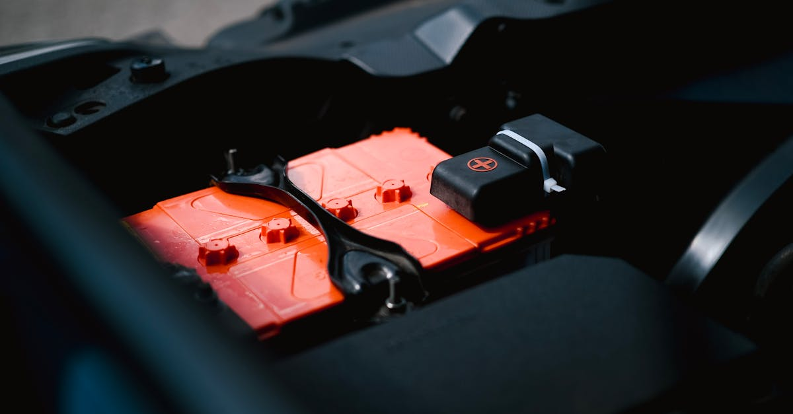
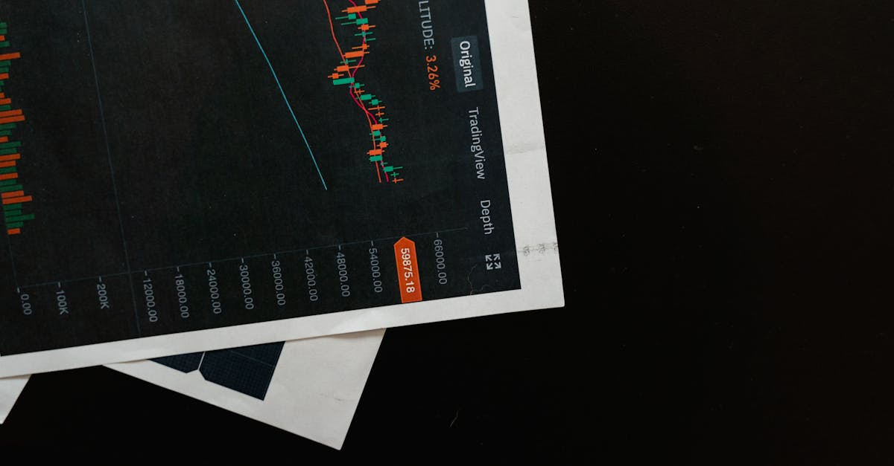
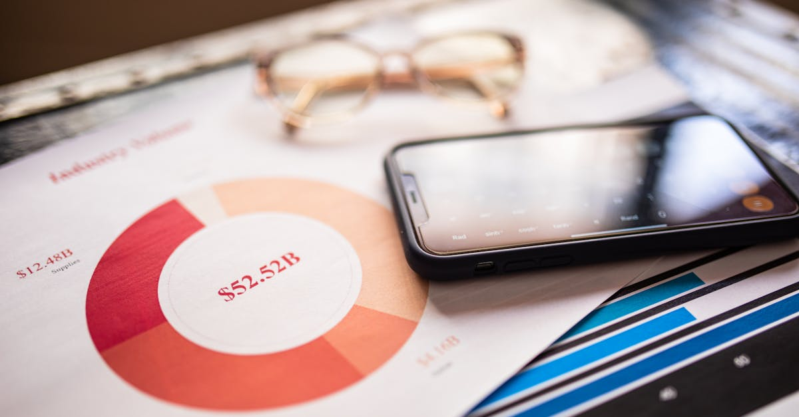

IA : Alvarez & Marsal vise 3,5 Mds $ d'ici 2028
Alvarez & Marsal parie sur l'IA pour générer la moitié de ses revenus d'ici 2028. Analyse de cette stratégie audacieuse pour le monde du conseil et ses implications.

Nvidia et DeepInfra : L'IA au cœur de la révolution du calcul
Nvidia soutient DeepInfra avec 107M$ pour l'IA. Impact sur le trading algorithmique, l'optimisation des performances boursières et l'avenir de la finance.

Anthropic se lance dans l'IA d'entreprise : Révolution ou simple évolution ?
Anthropic confirme son entrée sur le marché des services IA d'entreprise. Découvrez l'impact de cette stratégie sur l'investissement et les marchés financiers.

OPEC+, Chine-USA : Naviguer la Volatilité des Marchés avec l'IA
Analyse des défis macroéconomiques (OPEC+, tensions Chine-USA) et comment l'IA transforme le trading actions, ETF et indices boursiers.

GameStop et eBay: une OPA folle qui bouleverse la bourse
GameStop lance une OPA surprise de 56 milliards de dollars sur eBay. Analyse des implications pour les investisseurs et le trading IA.

Les EAU quittent l'OPEP : quel avenir pour l'énergie ?
L'Arabie Saoudite et ses alliés s'inquiètent : le départ des EAU de l'OPEP pourrait bouleverser le marché mondial de l'énergie. Analyse et implications.

Alimentation ultra-transformée : le casse-tête réglementaire
La définition des aliments ultra-transformés divise aux États-Unis, soulevant des questions pour les investisseurs et le secteur agroalimentaire.

Santé : Merck, Eli Lilly, GE HealthCare sous les projecteurs
Analyse des actualités marquantes du secteur de la santé avec Merck, Eli Lilly et GE HealthCare. Opportunités d'investissement et perspectives boursières.

Primorsk attaqué : les marchés pétroliers sous haute tension
L'attaque du port de Primorsk révèle la fragilité des marchés. Analyse de l'impact sur le pétrole et comment l'IA anticipe ces chocs pour les investisseurs.

Arm Holdings : L'IA au cœur d'une enquête en Malaisie
Une enquête malaisienne sur un accord impliquant Arm Holdings et l'IA soulève des questions pour les investisseurs et le secteur technologique.
IA et Oscars : Hollywood dit non aux acteurs et scénarios générés par IA
Hollywood ferme la porte aux créations 100% IA pour les Oscars. Analyse des implications pour la créativité et le marché du divertissement.

L'OPEP+ augmente ses quotas : ondes de choc pour vos portefeuilles ?
L'OPEP+ s'accorde sur une hausse de quota en juin. Décryptage des impacts sur le pétrole, l'inflation, les actions et ETFs. Anticipez avec TradePilot AI.

Bénéfices Américains Q1: L'IA Face au Mur d'Inquiétude de Wall Street
Découvrez comment les bénéfices surprise des entreprises US au T1 défient les craintes du marché. Analyse de l'impact sur actions, ETF et le rôle de l'IA.
Inde : Plus qu'un Leader, un Défi Géopolitique et Financier
L'Inde face à ses défis continentaux. Comment la géopolitique complexe impacte les marchés émergents et le trading d'actions, d'ETF et d'indices.
Liberty Global : Ziggo vise 500M€ de cash-flow en 2028
Liberty Global détaille la trajectoire de free cash flow de Ziggo Group jusqu'en 2028, tout en confirmant ses objectifs pour 2026. Analyse pour les investisseurs.

iShares iBonds 2027: Un Dividende Mensuel qui Interpelle le Marché
L'ETF iShares iBonds 2027 déclare un dividende mensuel de 0,1126 $. Analyse de cette opportunité de revenu et du rôle de l'IA dans l'investissement obligataire.
Dominion Energy: Croissance Verte et Stockage Massif en Virginie
Dominion Energy réaffirme sa croissance EPS et investit massivement dans l'éolien offshore et le stockage d'énergie en Virginie.

DoubleLine Déclare son Dividende : L'Œil Aiguisé de l'IA
DoubleLine Income Solutions annonce un dividende de 0,11 $. Découvrez comment l'IA analyse ces signaux pour optimiser les stratégies d'investissement en actions, ETF et indices.

Futures Boursiers : Un Optimisme Mesuré pour Début Mai
Les marchés boursiers entament mai avec prudence. Analyse des futures sur indices et perspectives pour le trading par IA.
SpaceX à 1250 Mds $ : Une Évaluation Stratosphérique Révélée
L'évaluation colossale de SpaceX à 1250 milliards de dollars suite à la vente de Blue Owl interroge les marchés. Impact sur les investissements et le trading IA.

Vistance Networks : Objectifs ambitieux et vente stratégique en 2026
Vistance Networks dévoile ses objectifs EBITDA ajusté pour 2026 et planifie une vente majeure. Analyse pour les investisseurs et traders IA.

Regency : Croissance solide des revenus locatifs en vue
Regency anticipe une croissance de ses revenus locatifs pour 2026. Analyse pour les investisseurs et traders IA.

Mastercard : des résultats Q1 solides, quelles implications pour 2026 ?
Mastercard dévoile des résultats trimestriels supérieurs aux attentes et ajuste ses prévisions pour 2026. Analyse pour les investisseurs et traders IA.

Crise à Hormuz : L'IA au secours de la navigation et des marchés
Tensions à Hormuz : Comment une nouvelle coalition pourrait impacter les marchés financiers et les stratégies de trading par IA.

Ategrity Vise Haut en 2026 : Analyse IA des Ambitions Financières
Ategrity anticipe un ratio combiné de 87% et une croissance premium agressive pour 2026. Découvrez l'analyse de ces objectifs et leur impact potentiel sur les marchés.

Lithia : L'IA révolutionne le concessionnaire auto d'ici 2028
Découvrez comment Lithia Motors déploie l'IA Pinewood pour transformer ses opérations et viser une croissance ambitieuse. Analyse pour les investisseurs.

Kone-TK Elevator : Un Géant Émerge, Redéfinissant le Paysage Mondial
L'acquisition colossale de TK Elevator par Kone pour 34,4 milliards de dollars bouleverse le marché des ascenseurs. Analyse de l'impact financier et stratégique.
OppFi rachète BNCCORP: Que cachent les 130M$?
Analyse approfondie du rachat de BNCCORP par OppFi. Implications pour les investisseurs et le secteur financier. Opportunités pour le trading IA.

CATL lève 5 Md$ : les géants de la finance misent sur la batterie
CATL, leader mondial des batteries, réussit une levée de fonds de 5 milliards de dollars. Millennium et NBIM investissent. Analyse pour les traders IA.

KONE : Résultats T1, une performance sous haute surveillance
Analyse des résultats T1 de KONE Oyj : impacts pour les investisseurs et pertinence pour le trading algorithmique.

Stride : Prévisions 2026 revues à la baisse
Stride ajuste ses prévisions de revenus et bénéfices pour 2026. Analyse des implications pour les investisseurs et le marché.

IA Google-Pentagone : Nouvel Accord Stratégique
Google renforce son partenariat avec le Pentagone pour l'IA, suite au refus d'Anthropic. Implications pour la sécurité et la finance.

Data Centers : Où vont-ils s'installer en 2026 ?
Les data centers peinent à trouver leur place. Découvrez l'impact sur les investissements et le trading d'actions, ETF et indices par IA.
Chômage Chine : 5.3% en Q1, 2.99M d'emplois créés
Emploi en Chine : le taux de chômage se stabilise à 5.3% avec 2.99 millions d'emplois créés au T1. Analyse pour les investisseurs.

Kansas City Life : Dividende Annonce, Que Savoir ?
Kansas City Life Insurance annonce un dividende de 0.18$. Analyse de cette décision et de ses implications pour les investisseurs.
Pétrole : Goldman Sachs revoit ses prévisions, l'IA anticipe
Goldman Sachs relève ses prévisions pétrolières à 90$/baril pour le Brent face aux tensions du Golfe. Quelle stratégie pour les investisseurs IA?

Norwood Financial : Fusion Gagnante et Marges Boostées dès 2026
Norwood Financial anticipe une augmentation de 2,2M$ de ses marges en 2026 grâce à l'intégration de Presence Bank. Analyse des synergies et perspectives.

Microsoft & OpenAI: La fin d'un partage de revenus secoue la tech
L'évolution du partenariat Microsoft-OpenAI et la fin du partage de revenus. Analyse de l'impact sur les actions et les stratégies d'investissement IA.
La Livre Sterling Sous Tension : Risques Majeurs pour les Traders
La livre sterling fait face à des risques politiques, électoraux et géopolitiques. Analyse des stratégies de protection des traders.